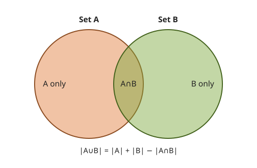
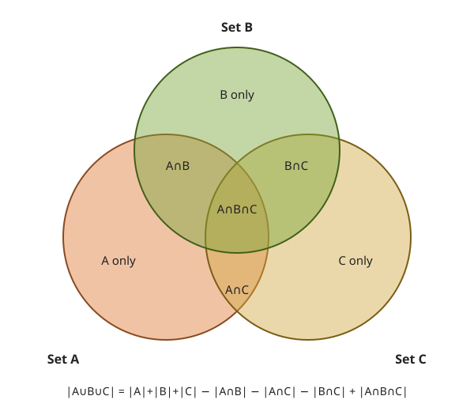
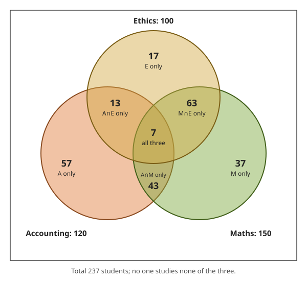

Inclusion-Exclusion Principle
Inclusion-Exclusion Principle
Summary
Counting the size of a union of overlapping finite sets.
Add the sizes of the sets, then subtract the overlaps so that elements belonging to more than one set are not counted twice.
- For three sets, the triple overlap is added back at the end.
Notation
- A set is finite if it has finitely many elements.
- Write |A| for the number of elements in A (its cardinality).
- An infinite set is one that is not finite.
- I.e. the set of positive integers is infinite.
- Two sets A and B are disjoint if A ∩ B = ∅.
- Disjoint pieces can be counted separately and their sizes added.
Two sets
If A and B are finite sets, then
|A ∪ B| = |A| + |B| - |A ∩ B|
The |A ∩ B| term removes the elements that were counted in both sets.

Figure 1: Two overlapping sets. The lens in the middle is A ∩ B.
Three sets
The same idea extends to three finite sets A, B, C:
|A ∪ B ∪ C| = |A| + |B| + |C| - |A ∩ B| - |A ∩ C| - |B ∩ C| + |A ∩ B ∩ C|
Subtracting the pairwise overlaps removes too much when an element lies in all three sets.
That element was added three times and subtracted three times, so it must be added back once, which is the triple intersection term.

Figure 2: Three overlapping sets with every region labelled.
Method: splitting a set into disjoint pieces
Many problems ask for the size of a set that is only partly described.
- Split it into disjoint pieces, count each, then add.
For example, let X = A ∩ M ∩ Ē (in A and M, not in E) and Y = A ∩ M ∩ E (in all three).
Then X ∩ Y = ∅ and X ∪ Y = A ∩ M, so
|A ∩ M| = |X| + |Y|
This is the basic move behind the "exactly these sets" questions in the examples below.
Example: Cards
In an ordinary deck, let A be the aces and C the clubs. Then |A| = 4, |C| = 13, and |A ∩ C| = 1 (the ace of clubs). So
|A ∪ C| = 4 + 13 - 1 = 16
There are 16 cards that are aces or clubs.
Example: Survey
A survey in Scotland finds that 86% of the population have heard of product A, 80% have heard of product B, and 70% have heard of both.
Let N be the population size, and let A and B be the sets of people who have heard of each product.
Then
- |A| = 0.86N
- |B| = 0.8N
- |A ∩ B| = 0.7N
So
|A ∪ B| = 0.86N + 0.8N - 0.7N = 0.96N
So 96% have heard of at least one product, and 4% have heard of neither.
Complementing the union gives the answer directly.
Figure 3: Survey regions as shares of the population. The outside region is the 4% who have heard of neither product.
Example: Divisibility (three sets)
How many integers from 1 to 100 are divisible by 2, 3 or 5?
Let U = {1, …, 100}, and let
- A = {n ∈ U : 2 divides n}, so |A| = 50
- B = {n ∈ U : 3 divides n}, so |B| = 33 (the integer part of 100/3)
- C = {n ∈ U : 5 divides n}, so |C| = 20
A number is divisible by two coprime numbers exactly when it is divisible by their product (equivalently, their least common multiple or "lcm").
So the pairwise overlaps are:
- A ∩ B: divisible by lcm(2, 3) = 6, so |A ∩ B| = 16
- A ∩ C: divisible by lcm(2, 5) = 10, so |A ∩ C| = 10
- B ∩ C: divisible by lcm(3, 5) = 15, so |B ∩ C| = 6
The triple overlap is divisible by 30, so |A ∩ B ∩ C| = 3.
Then
|A ∪ B ∪ C| = 50 + 33 + 20 - 16 - 10 - 6 + 3 = 74
So 74 integers are divisible by 2, 3 or 5, and the other 26 are not.
Figure 4: Three-set regions for the divisibility example.
Example: University of Scabia (three sets)
All first-year computer science students at the University of Scabia study at least one of three modules:
- Accounting (A)
- Ethics (E)
- mathematics (M)
There are 237 students.
- 120 study (A)ccounting
- 100 study (E)thics
- 150 study (M)aths
- 50 study (A)ccounting and (M)aths
- 20 study (A)ccounting and (E)thics
- and 70 study (M)aths and (E)thics
Part 1: Students who study all three
Since everyone is in at least one module, |A ∪ E ∪ M| = 237.
The formula gives
237 = 120 + 100 + 150 - 50 - 20 - 70 + |A ∩ E ∩ M| 237 = 230 + |A ∩ E ∩ M| |A ∩ E ∩ M| = 7
So 7 students study all three subjects.
Part 2: Accounting and Maths, but not Ethics
Let X = A ∩ M ∩ Ē and Y = A ∩ M ∩ E.
These are disjoint, and their union is A ∩ M.
Then
|A ∩ M| = |X| + |Y| 50 = |X| + 7 |X| = 43
So 43 students study (A)ccounting and (M)aths but not (E)thics.

Figure 5: Students in each region of the Scabia problem. The seven regions sum to 237, so no student falls outside the circles.